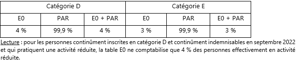
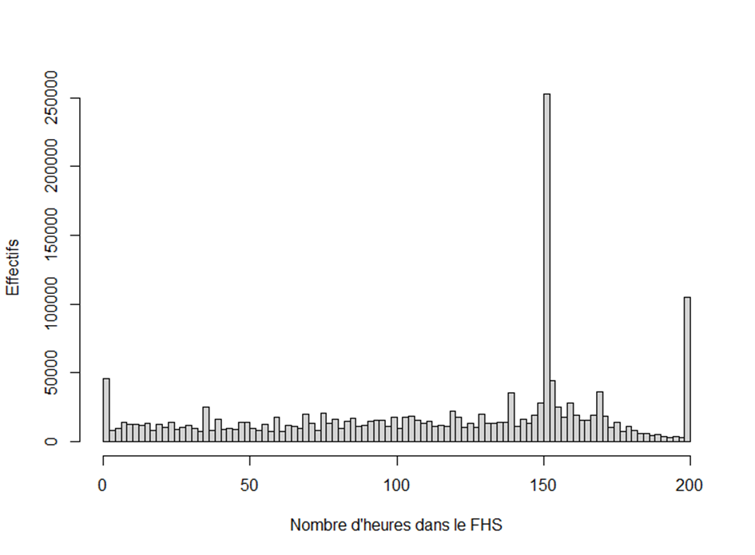
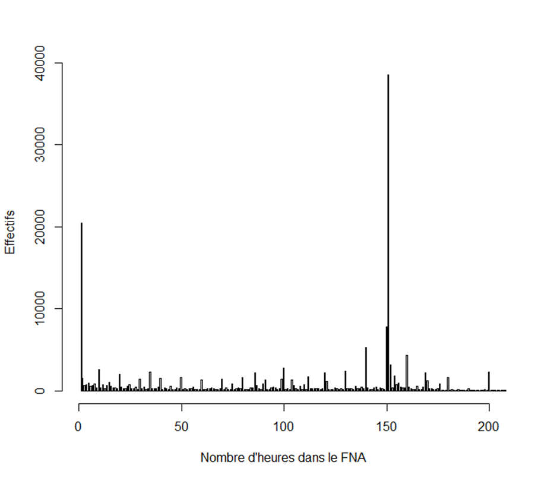
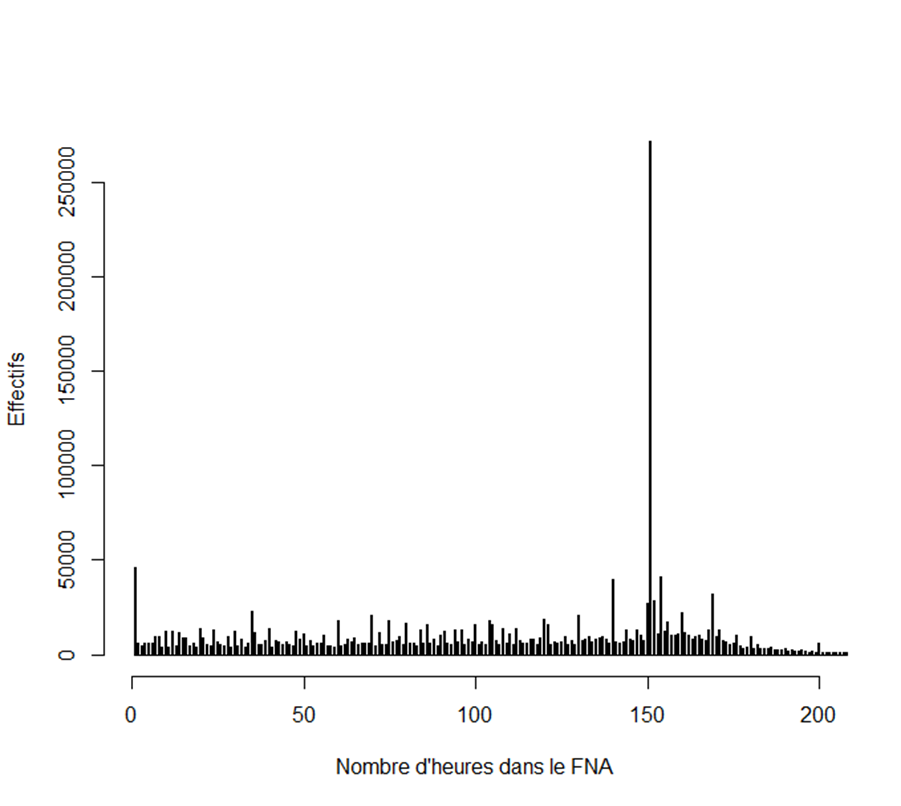
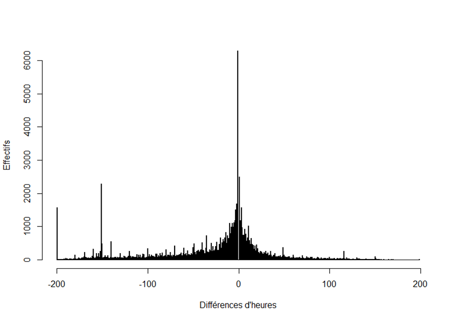
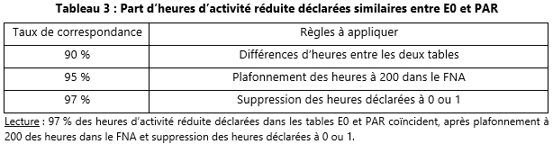
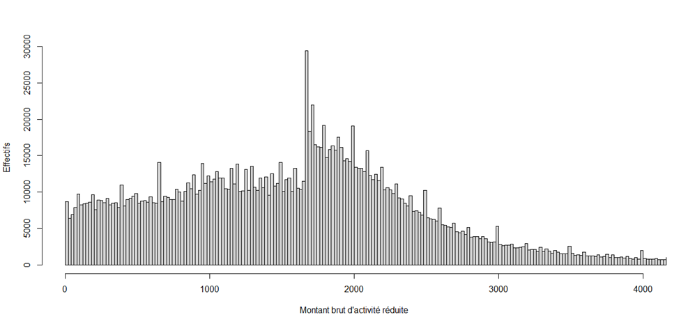

Activité réduite
Les personnes en activité réduite sont les personnes qui occupent une activité professionnelle tout en étant inscrites à France Travail ; on parle également d’« allocataires qui travaillent ». MiDAS contient deux sources différentes d’information sur la pratique de l’activité réduite : d’une part la table E0 du FHS, d’autre part la table PAR du FNA. Des préconisations sont fournies à la fin de cette fiche pour repérer les personnes en activité réduite dans MiDAS.
I. Définir la catégorie d’inscription
Pour repérer les personnes en activité réduite, il faut tout d’abord déterminer les personnes qui peuvent effectivement en exercer une parmi les inscrits à France Travail. Cinq catégories d’inscription existent à France Travail et seules les catégories B à E sont concernées : les personnes qui exercent une activité réduite sont principalement classées en catégories B ou C, la distinction entre les deux étant définie par le nombre d’heures d’activité réduite exercées un mois donné1 (plus ou moins 78 heures), mais on les retrouve également dans les catégories D et E (respectivement des personnes en Contrat de sécurisation professionnelle (CSP) ou en contrat aidé par exemple).
Dans MiDAS, comme plus généralement pour le suivi des inscrits à France Travail en fin de mois, les catégories d’inscription sont définies à l’aide des tables DE et E0 du FHS qui servent à déterminer le nombre de personnes inscrites chaque mois à France Travail. On utilise les variables suivantes : les dates d’inscription et de désinscription à France Travail (DATINS et DATANN) pour déterminer les personnes inscrites chaque mois, la catégorie opérationnelle de France Travail (CATREGR) et le nombre d’heures d’activité réduite (NBHEUR) renseigné dans E0. Pour un mois donné :
Une personne est en catégorie A si CATREGR vaut « 1 », « 2 » ou « 3 » et qu’elle n’apparaît pas dans E0 ;
Une personne est en catégorie B si CATREGR vaut « 1 », « 2 » ou « 3 » et que NBHEUR ≤ 782 ;
Un personne est en catégorie C si CATREGR vaut « 1 », « 2 » ou « 3 » et que NBHEUR > 78 ;
Une personne est en catégorie D si CATREGR vaut « 4 » ;
Une personne est en catégorie E si CATREGR vaut « 5 ».
II. Définir l’activité réduite
Dans MiDAS, deux tables renseignent sur l’activité réduite : la table E0 du FHS et la table PAR du FNA. Elles sont utilisées de manière complémentaire pour repérer l’activité réduite :
La table E0 renseigne uniquement sur les personnes inscrites en catégories B et C. Le nombre d’heures est plafonné à 200, ce qui revient à une journée de 10 heures de travail maximal, soit 50 heures par semaine. En revanche, aucune information sur le salaire perçu dans le cadre de l’activité réduite est présente ;
La table PAR renseigne sur l’ensemble des personnes inscrites à France Travail, indépendamment de la catégorie d’inscription. Le nombre d’heures renseignées (KPHARP) n’est pas plafonné, mais cette table donne le salaire brut de l’activité réduite exercée (KQBARP).
III. Statistiques descriptives sur l’activité réduite
La suite de la fiche prend comme champ les personnes continûment inscrites et indemnisables sur tout le mois de septembre 2022.
A. Catégorie d’inscription et activité réduite
Tout d’abord, selon que l’on utilise le nombre d’heures renseignées dans le FHS ou celui du FNA, la répartition des demandeurs d’emploi par catégorie d’inscription n’est pas la même.
Tableau 1 : Personnes inscrites et indemnisables à France Travail par catégorie d’inscription en septembre 2022 selon la source de données

Les personnes comptabilisées comme faisant de l’activité réduite sont dans le rectangle vert ; celles dans le rectangle jaune apparaissent dans la table PAR du FNA mais ne sont pas comptabilisées car elles sont classées en A dans le FHS : parmi ces dernières, deux tiers déclarent soit un nombre d’heures nul, soit un salaire nul (61 % déclarent un salaire nul, 62 % un nombre d’heures nuls, 1 % déclarent 1 heure). Pour cette raison, ces personnes ne sont pas considérées en activité réduite.
Parmi les personnes classées en D ou E, 76 % exercent une activité réduite en septembre 2022. Seule la table PAR fournit une information exhaustive (tableau 2). Pour cette raison, l’information issue du FHS n’est pas retenue pour caractériser l’activité réduite des catégories D et E.
Tableau 2 : L’information disponible des catégories D et E qui font de l’activité réduite

B. Les heures d’activité réduite
1. Les heures d’activité réduite dans le FHS
Parmi les inscrits et indemnisables en catégories B et C qui font de l’activité réduite, environ 1 500 personnes déclarent 0 heures d’activité réduite en septembre 2022, soit moins d’1 % du champ. En les retirant, on observe trois pics (graphique 1) :
Un pic à 1 heure (2 % du champ) : il s’agit de l’activité réduite non salariée ;
Un pic à 151 heures (13 % du champ) : sachant que le mois de septembre 2022 compte 22 jours ouvrés, cela représente une journée de travail de 7 heures, soit une semaine de travail de 35 heures ;
Un pic à 200 heures (6 % du champ) : il s’agit des personnes qui travaillent effectivement 200 heures dans le mois (soit 10 heures par jour pour une semaine de travail de 5 jours) et des personnes dont les heures déclarées, supérieures à 200, ont été plafonnées.
Graphique 1 : Distribution des heures d’activité réduite dans le FHS (catégories B et C)

Source : MiDAS (FHS).
Champ : Personnes continûment inscrites à France Travail en catégories B et C qui sont indemnisables sur l’ensemble du mois de septembre 2022, hors heures nulles déclarées.
2. Les heures d’activité réduite dans le FNA
Parmi les inscrits et indemnisables en catégories D et E qui font de l’activité réduite, environ 20 000 personnes déclarent 0 heures d’activité réduite en septembre 2022, soit 10 % du champ. En les retirant, on observe deux pics (graphique 2a) :
Un pic à 1 heure (12 % du champ) ;
Un pic à 151 heures (22 % du champ).
Certaines heures déclarées sont supérieures à 200 car elles ne sont pas plafonnées.
Graphique 2a : Distribution des heures d’activité réduite dans le FNA (catégories D et E), avec plafonnement des heures à 200

Source : MiDAS (FHS-FNA).
Champ : Personnes continûment inscrites à France Travail en catégories D et E qui sont indemnisables sur l’ensemble du mois de septembre 2022, hors heures nulles déclarées.
Parmi l’ensemble des inscrits et indemnisables qui déclarent faire de l’activité réduite dans le FNA, environ 95 000 personnes déclarent 0 heures d’activité réduite en septembre 2022, soit 5 % du champ. En les retirant, on observe deux pics (graphique 2b) :
Un pic à 1 heure (3 % du champ) ;
Un pic à 151 heures (14 % du champ).
Certaines heures déclarées sont supérieures à 200 car elles ne sont pas plafonnées.
Graphique 2b : Distribution des heures d’activité réduite dans le FNA (catégories B et C)

Source : MiDAS (FHS-FNA).
Champ : Personnes continûment inscrites à France Travail (toutes catégories confondues) dans le FNA qui sont indemnisables sur l’ensemble du mois de septembre 2022, hors heures nulles déclarées.
3. Le nombre d’heures d’activité réduite entre les deux tables
Certaines personnes sont considérées en activité réduite selon une source et non selon l’autre. Ainsi, parmi les personnes inscrites et indemnisables tout le mois, tenues de faire des actes positifs de recherche d’emploi et qui sont en activité réduite en septembre 2022 :
99,6 % de ceux qui pratiquent l’activité réduite d’après le FHS (catégories B et C) la pratiquent également d’après le FNA ;
98 % des catégories B dans le FHS sont également dans cette catégorie dans le FNA ;
98 % des catégories C dans le FHS sont également dans cette catégorie dans le FNA.
Pour les personnes qui apparaissent dans les deux tables, on constate que le nombre d’heures déclarées est quasiment identique pour la quasi-totalité d’entre elles : après plafonnement des heures déclarées dans le FNA (graphique 3), 95 % des personnes présentes dans les deux tables déclarent le même nombre d’heures d’activité réduite.
Parmi les 5 % restantes (80 000 personnes), à savoir les personnes pour lesquelles la différence d’heures déclarées entre le FNA et le FHS n’est pas nulle, on observe un pic à -1 heure (8 % du champ). Le taux de correspondance atteint 97 % en supprimant les heures nulles ou égales à 1 (tableau 3).
Graphique 3 : Distribution des différences d’heures d’activité réduite déclarées entre le FNA et le FHS après plafonnement des heures dans le FNA

Source : MiDAS (FHS-FNA).
Champ : Personnes continûment inscrites et indemnisables sur tout le mois de septembre 2022 qui apparaissent à la fois dans E0 et PAR mais qui ne déclarent pas le même nombre d’heures d’activité réduite dans le FHS et le FNA, même après avoir plafonné ces dernières.

C. La rémunération de l’activité réduite
Si on s’intéresse à toutes les personnes qui déclarent faire de l’activité réduite dans le FNA, on constate que près de 12 % déclarent une rémunération nulle. En les retirant du champ, on observe un léger pic à 1 679 € (0,6 % du champ), qui correspond au montant brut du SMIC en septembre 2022 pour un emploi à temps plein.
Graphique 4 : Distribution des rémunérations d’activité réduite déclarées dans le FNA

Source : MiDAS (FHS-FNA).
Champ : Personnes continûment inscrites à France Travail (toutes catégories confondues) qui sont présentes dans PAR et qui sont indemnisables sur l’ensemble du mois de septembre 2022, hors salaires nuls déclarés.
Pour les personnes qui sont au cumul, c’est-à-dire celles qui sont indemnisées par une allocation-chômage et qui exercent une activité réduite, il est possible de vérifier la validité de cette variable de rémunération en comparant le nombre de jours effectivement indemnisés dans le mois à sa valeur prédite, d’après le montant de cette rémunération et les caractéristiques du droit. Cet exercice révèle des incohérences dans un quart à un tiers des cas (sachant que ce taux augmente si on prend un champ moins restrictif), ce qui incite à ne pas utiliser cette variable de rémunération (cf. partie V).
IV. Comparaison avec l’Unedic
À titre de comparaison, l’Unedic estime à 853 721 le nombre d’allocataires qui travaillent et qui sont indemnisés au 30 septembre 2022, avec un droit ouvert à certaines allocations (ARE, AREF, ASP, ATI, AREP). En appliquant la définition de l’activité réduite avec MiDAS sur le même champ, on obtient 873 607 personnes, en supprimant ceux qui déclarent 0 heures d’activité réduite3.
V. Conclusions sur l’activité réduite
La comparaison des tables E0 du FHS et PAR du FNA permet d’établir les constats suivants sur la mesure de l’activité réduite :
La mesure de l’activité réduite des catégories D et E peut uniquement être établie de manière exhaustive à partir de la table PAR du FNA ;
Concernant les allocataires tenus de faire des actes positifs de recherche d’emploi :
o 99,6 % de ceux qui pratiquent l’activité réduite d’après le FHS (catégories B et C) la pratiquent également d’après le FNA ;
o 98 % des catégories B dans le FHS sont également dans cette catégorie dans le FNA ;
o 98 % des catégories C dans le FHS sont également dans cette catégorie dans le FNA ;
o 95 % de ceux présents à la fois dans le FHS et dans le FNA déclarent les mêmes heures travaillées dans les deux sources après plafonnement des heures dans le FNA à 200. En supprimant les cas extrêmes (0 ou 1 heure travaillée), ce taux atteint 97 %.
Préconisations :
Utiliser le nombre d’heures d’activité réduite renseignées dans le FHS pour distinguer les personnes en catégories B et C ;
Utiliser le nombre d’heures d’activité réduite renseignées dans le FNA pour les personnes inscrites en catégories D et E ;
Plafonner à 200 les heures renseignées dans le FNA ;
Ne pas utiliser la variable qui renseigne sur la rémunération brute d’activité réduite, en raison de sa mauvaise qualité pour près d’un tiers à un quart des personnes en activité réduite.
Footnotes
L’activité réduite est toujours identifiée sur un mois complet : il n’y a pas de date de début, ni de date de fin.↩︎
Sont incluses les personnes qui déclarent 0 heures d’activité réduite : en septembre 2022, parmi les personnes qui sont continûment inscrites et indemnisables, seules 1 640 déclarent 0 heures d’activité réduite. À noter également qu’il n’y a pas d’heures d’activité réduite non renseignées dans la table E0.↩︎
Filtrer sur le salaire d’activité réduite renseigné (mais en gardant les montants nuls) donne 868 890 personnes.↩︎